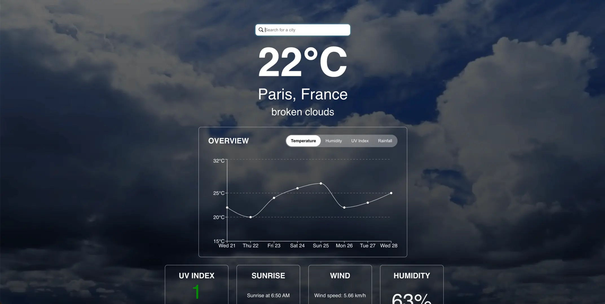

Career Path

In 2016, I completed two Master's Degrees in MIAGE (Business Informatics) and MBDS (Mobiquity, Web Development and Databases), from the Université Côte d'Azur.
I have spent five years at the University studying and developing my skills as a freelance.
I mostly worked for companies which needed to build their 1st website / mobile app.
During my last year of studies, I also worked for the biggest project of Sopra Steria, a retirement processes manager.
The database used had millions of entries so it was a challenge dealing with it while still being fast and efficient.
After having graduated, I wanted to start my career in a dynamic city.
So, I decided to move to Paris and work in a startup: Reezocar.
My goal was to build a CRM from scratch and manage all the projects & staff related to it.
Three years later, Reezocar was bought by Société Générale and I decided to find a new opportunity in a french mass media company: Canal+.
There, I worked on the video player and on its deployment on new platforms such as TVs (Samsung, Philips, HiSense, ...),
consoles (PS4, PS5, Xbox One, Xbox Series X), Stores (Microsoft Store) and on existing platforms (Desktop, Mobile).
I worked there for more than 4 years.
Since 2024, I live in Toulouse, in the south of France.
I am interested in exploring career opportunities in IT and I would like to continue building a career that lets me focus on professional growth (management, tech skills).
If you like my profile, don't hesitate to contact me!
Carpool web app using BlaBlaCar API
The goal of this project was to create a simpler version of BlaBlaCar using their API.
The website has two pages: one to search for a trip and one to propose a trip. Each result links to the reservation page of BlaBlaCar.
DISCOVER
AI-based search engine for travelling
I wanted to use the power of AI, through OpenAI API, to create a search engine that would help people to find the best country to travel to.
The result also uses a GraphQL API to display detailed information about the country in an intuitive way.
CHECK IT OUT ON GITHUB

Beautiful and interactive Weather app
I wanted to create a weather app that would be simple to use and would display the weather in a beautiful way.
The app uses the OpenWeatherMap API to get the weather and displays many graphics to make it more intuitive for the user.
TAKE A LOOK
Pleasant and simple to use video player with cool CSS animations
I wanted to re-think the folders/files design such as we use it everyday on our computers and wanted to make something pleasant to use.
These videos launch on a web player I developed specifically for this project to be complete.
EXPLORE PROJECT
Android application working with LiFi made for an International Perfume Museum
With other software engineers from the University, we created an Android application for a Museum in France.
The application works with LiFi, so that when a user is near an artpiece, its description, photos and videos are displayed directly on his mobile.
INSPECT THE REPO
Watch My Health is a multi-platform app made to support anyone's health journey
We worked on the first Wear OS Application that lets you track multiple physical activities such as the heart rate and the number of steps.
The Android app connected to it lets the user see live tracked elements while the web app is made of graphics to analyze user's evolution day-by-day.
DIVE IN
Animated 3D cube using CSS3 perspective, rotations and animations features
I wanted to try CSS3 new features and build a cube in 3D with interactions without using any JavaScript.
The first step is to constitute the cube from differents layers and then makes it rotate on itself. On mouse over the cube, the cube expands in a fluid way.
SEE IT LIVE
About me

I've recently asked myself : now that I want to rebuild my website entirely, what should I show ?
When I created my 1st website, I was 15 years old and I was only using it to put a some pictures of my family and to put the music I was creating online.
Then, it became the place where I was improving my skills as a noob developer and showing them to my relatives.
At the University, it was my showcase platform to show all my creations.
Since then, things have changed.
My free time is now dedicated to travel, build things and learn while going to Meetups or learning MOOCs.
Now, my work let me improve my skills of Development and Management.
One of the common things between my personal and professional life is that I do code, and my website is going to present you this part of my life.
On the footer, you can also access some extra things such as my passions =)
Have a good visit!
Contact